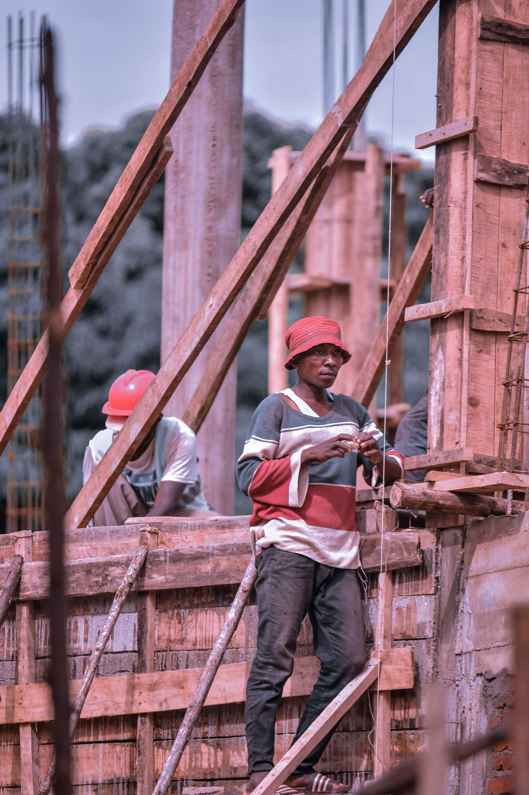
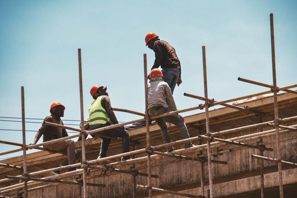

Building works
From early ground preparation to finishing details, we coordinate building work with attention to durability, function and the way each space will be used.
Twavwane Building & Civil Engineering Contractors helps clients move from a clear idea to a carefully delivered structure. We bring practical planning, capable site teams and disciplined workmanship to building and civil engineering work.

The best construction outcomes come from doing the fundamentals consistently. We listen closely at the beginning, plan the work around real site conditions, and keep communication open as the project progresses.
From early ground preparation to finishing details, we coordinate building work with attention to durability, function and the way each space will be used.
We support infrastructure and civil works that need practical sequencing, careful measurements and a dependable approach to site execution.
Clear scope, realistic conversations and steady supervision help clients make informed decisions throughout delivery.


